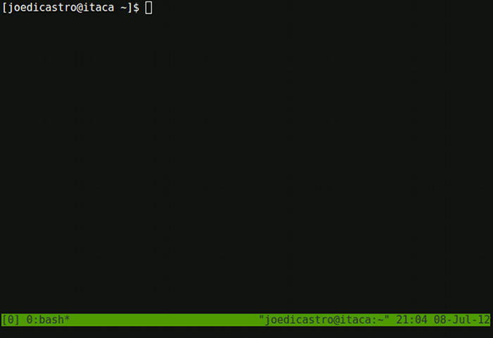
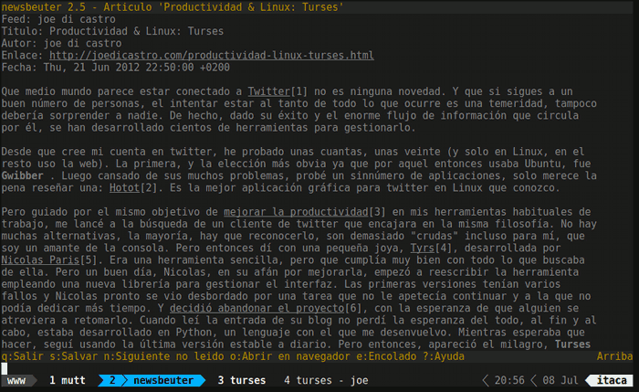

Tmux es un multiplexor de terminales. Es una herramienta básica, casi diría imprescindible, para los que trabajamos habitualmente con la consola de Linux. El termino multiplexor es empleado en electrónica para designar un dispositivo que combina múltiples entradas en una única salida. Esto es lo que hace tmux, combinar varios terminales en una sola ventana, de forma que podamos organizarlos de la forma más eficiente posible. Si lo primero que te viene a la cabeza son terminales con múltiples pestañas o paneles como Terminator, olvídalo, tmux es un concepto diferente y más potente.
La gran diferencia es que tmux está basado en un modelo cliente-servidor. El servidor puede albergar múltiples sesiones y cada instancia (ventana de terminal) puede estar asociado con una o más sesiones. Se pueden abrir, cerrar sesiones, moverse entre ellas, renombrarlas. Una sesión puede ser compartida por varios clientes, lo que es empleado por ejemplo para sesiones de pair programming. Si se cierra un cliente, la sesión sigue corriendo en segundo plano, pudiéndose volver a ella cuando se desee. A su vez cada sesión puede albergar varias ventanas (el equivalente a las pestañas en otros terminales) y cada ventana puede subdividirse en varios paneles.
Es una aplicación muy flexible y con muchas posibilidades, no voy a entrar en
detalle en todas ellas porque me extendería demasiado. Es totalmente controlable
desde el teclado, lo que lo hace muy ágil en su manejo. Yo lo uso a diario y es
muy raro que trabaje en un terminal sin hacerlo dentro de una sesión de tmux.
Tmux te permite tener perfectamente organizadas todas esas ventanas de terminal
que los SysAdmins manejamos y que de otra manera se convierten en un caos. Antes
de emplear tmux empleaba screen y terminator dependiendo de la tarea y el equipo
a emplear, pero tmux me da lo mejor de ambas aplicaciones y aún más. Y si además
los combinamos con un terminal ligero, superrápido y con soporte para UTF-8 y
256 colores como rxvt-unicode tenemos un entorno ideal para cualquier tarea
que desarrollemos en la consola.
Características
Este es un resumen de las características de tmux:
- Modelo cliente/servidor
- Linea de comandos potente, consistente y fácilmente programable
- Totalmente controlable desde el teclado, aunque tiene un soporte básico de ratón
- División de las ventanas en múltiples paneles horizontales y/o verticales
- Los paneles pueden ser movidos, redimensionados y pueden reorganizarse en esquemas predefinidos
- Sincronizar paneles. Introducir el mismo texto en varios paneles a la vez
- Soporte para UTF-8 y 256 colores
- Copiar y pegar con múltiples bufferes
- Menús interactivos para seleccionar ventanas, sesiones o clientes
- Bloqueo de terminal manualmente o por cuenta atrás
- Moverse a una ventana mediante una búsqueda del texto existente dentro de ella
- Barra de estado por defecto y muy personalizable
- Fichero de configuración basado en texto plano
- Soporte para combinaciones de teclas basadas en Vim o Emacs
- Documentación bastante completa
En esta imagen se puede ver la configuración por defecto de tmux, a primera vista no se puede apreciar toda la potencia que se esconde detrás de esta aplicación.

Alternativas
La alternativa más directa es el veterano GNU Screen en el que se inspira tmux. Sigue siendo una aplicación muy utilizada, pero en mi opinión tmux la ha superado hace tiempo. Otra alternativa es Byobu que no es más que un frontend para tmux o screen que los hace más amigables para los usuarios menos avanzados.
Scripts
Una de las posibilidades más potentes que nos permite tmux es la de la creación de scripts para iniciar una o varias sesiones con configuraciones predeterminadas. De esto modo se pueden crear sesiones predefinidas para desarrollo, web, ssh, etc. Pero crear scripts en tmux es una tarea bastante árida, por lo que se han desarrollado algunas utilidades de terceros para realizar esto de forma más cómoda y agradable:
-
Tmuxinator es una utilidad escrita en Ruby para crear y modificar sesiones de Tmux, permitiendo crear sesiones complejas de una forma muy sencilla ya que emplea ficheros de configuración en formato YAML para ello.
-
teamocil es una utilidad que nos permite crear esquemas de ventanas y paneles predefinidos con facilidad empleando el formato YAML. También está escrito en Ruby, en cuya comunidad de desarrolladores tmux está muy implantado.
Aquí se puede ver una ventana de tmux con mi configuración en la que se muestra
la sesión www donde tengo agrupadas varias ventanas con aplicaciones
relacionadas con la web. Se puede ver como estoy en la ventana 2 de 4 y como he
personalizado la barra de estado:

Mi configuración
Mi configuración de tmux puede encontrarse en mi repositorio dotfiles en GitHub. Mi configuración se apoya en la muchos otros usuarios que me han aportado ideas y en buena parte gracias a la lectura del libro tmux: Productive Mouse-Free Development de Brian P. Hogan.
En esta otra imagen se puede ver una sesión de desarrollo con tmux, donde tengo abiertos tres paneles con tres aplicaciones (de izquierda a derecha y de arriba a abajo): vim, ipython y tig. Así mismo hay una ventana adicional donde tengo un shell bash. Pulsar sobre ella para ver a tamaño completo.
{kind=link}
Voy a destacar algunos puntos reseñables de mi configuración. Lo primero que
configuro es la combinación de teclas conocida como Prefix que es la
combinación que precede a los atajos de teclado de tmux. Esto se hace de este
modo para no interferir con los atajos de teclado de las aplicaciones que
ejecutemos dentro de tmux. El prefijo por defecto de tmux es Ctrl + b,
pero para los que estábamos acostumbrados a screen la combinación Ctrl +
a es más idónea. Y también porque es más cómodo de teclear, sobre todo si
como en mi caso, tienes mapeada una tecla de Ctrl adicional en lugar de
Bloq Mays. Bueno, en realidad uso la tecla Bloq Mays también como
tecla Esc cuando no es pulsada en combinación con otras, gracias a la
maravillosa pequeña utilidad xcape, muy útil para los usuarios de Vim.
# Use C-a instead of C-b as the prefix set -g prefix C-a unbind-key C-b bind-key C-a send-prefix
Para emplear 256 colores y indicarle que interprete de shell emplear, se lo indico mediante las siguientes lineas
# set 256 colors set -g default-terminal "screen-256color" # set default shell set -g default-command "exec /bin/bash"
También cambio el retraso inicial después de pulsado el prefijo, para que no de problemas con otras aplicaciones como vim y para mejorar su respuesta.
# be more responsive, changing the default delay set -sg escape-time 1
Para hacer más fácil el cambio entre ventanas y paneles a través de los números de los mismos, lo que hago es que empiecen a contar desde 1 y no desde 0
# Start numbering at 1 set -g base-index 1 setw -g pane-base-index 1
Esto es muy útil para comprobar cambios en la configuración sobre la marcha sin
necesidad de cerrar las sesiones. Este comando me permite recargar la
configuración en vivo con la combinación prefix r
# force a reload of the config file unbind r bind r source-file ~/.tmux.conf \; display "Reloaded!"
Para moverme entre los paneles y cambiar su tamaño empleo las teclas típicas de movimiento de vim para no tener que abandonar los dedos de la fila principal del teclado.
# moving between panes bind h select-pane -L bind j select-pane -D bind k select-pane -U bind l select-pane -R # Quick pane selection bind -r C-h select-window -t :- bind -r C-l select-window -t :+ # Pane resizing bind -r H resize-pane -L 5 bind -r J resize-pane -D 5 bind -r K resize-pane -U 5 bind -r L resize-pane -R 5
La barra de estado que empleo está inspirada en el plugin de Vim, vim-powerline, que le otorga una estética más lograda que la original. Es necesario emplear para ello una fuente monoespaciada parcheada especialmente, con los símbolos que emplea vim-powerline. Se pueden encontrar varias en su wiki. Yo empleo mi fuente preferida que es Dejavu Sans Mono.
# Custom status bar # Powerline symbols: ⮂ ⮃ ⮀ ⮁ ⭤ set -g status-utf8 on set -g status-left-length 32 set -g status-right-length 150 set -g status-interval 2 set -g status-left '#[fg=colour15,bg=colour238,bold] #S #[fg=colour238,bg=colour234,nobold]⮀' set -g status-right '#[fg=colour245]⮃ %R ⮃ %d %b #[fg=colour254,bg=colour234,nobold]⮂#[fg=colour16,bg=colour254,bold] #h ' set -g window-status-format "#[fg=white,bg=colour234] #I #W " set -g window-status-current-format "#[fg=colour234,bg=colour39]⮀#[fg=colour16,bg=colour39,noreverse,bold] #I ⮁ #W #F #[fg=colour39,bg=colour234,nobold]⮀"
Por último unos atajos de teclado muy útiles que me permiten hacer un zoom temporal de un panel a ventana completa y luego regresar a la distribución original de paneles.
# Maximize and restore a pane unbind Up bind Up new-window -d -n tmp \; swap-pane -s tmp.1 \; select-window -t tmp unbind Down bind Down last-window \; swap-pane -s tmp.1 \; kill-window -t tmp
Comentarios !